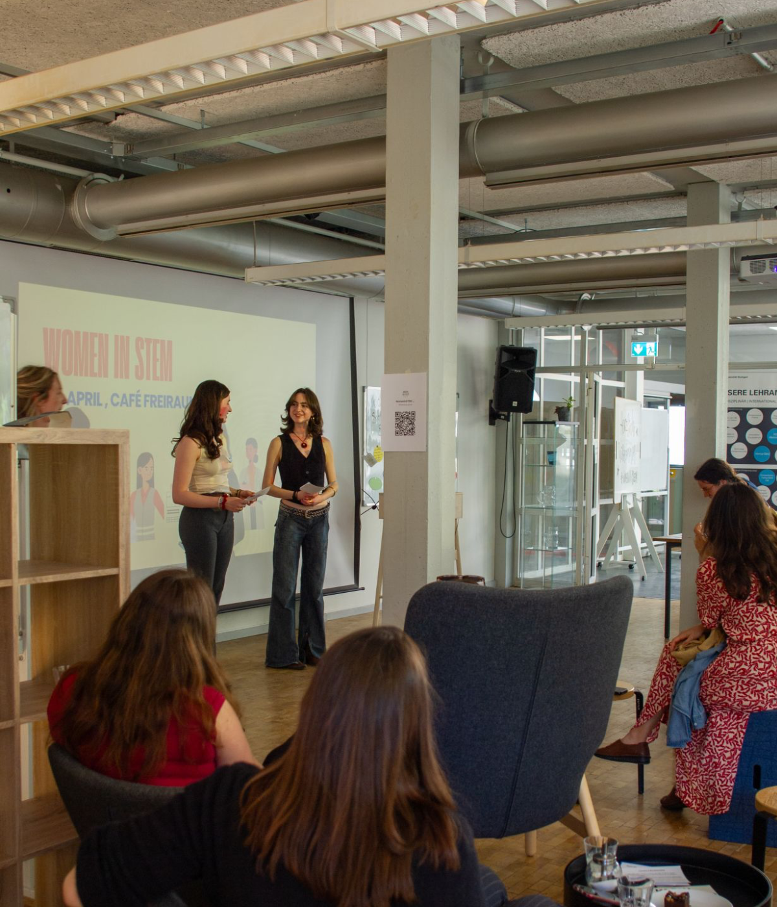
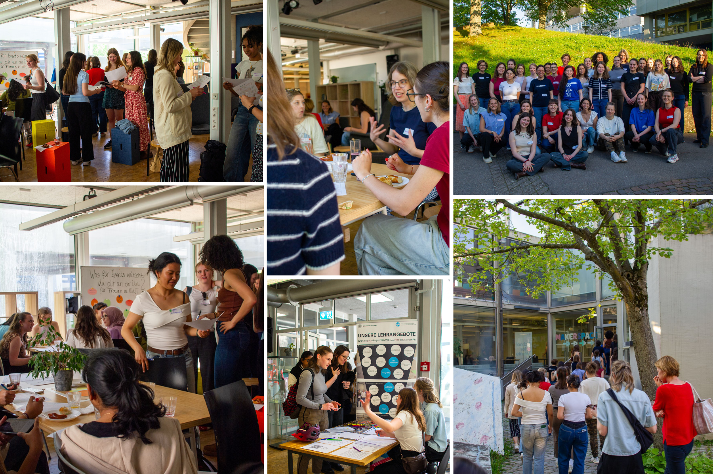
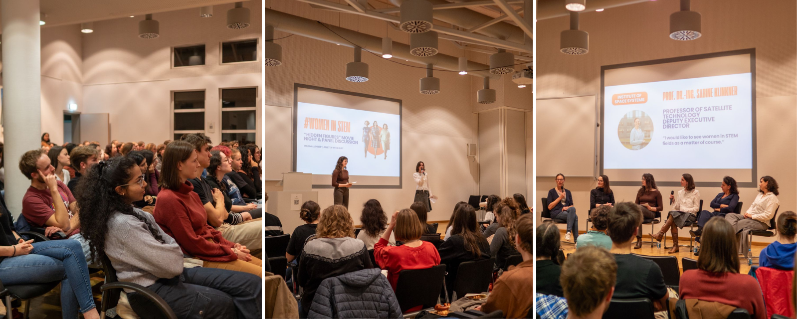

We connect, empower, and celebrate women in science, technology, engineering, and mathematics - building a community among female STEM students at the University of Stuttgart.

We are looking forward to our next event, the #WomenInSTEM Festival - an all-day event with a diverse program, including keynotes from inspiring role models, workshops to strengthen professional and personal skills, and a networking and career fair with representatives from various companies and research institutions.
The following schedule is preliminary, more details will follow soon.
Registration will open the end of March.
So far, we hosted two successful events at the University of Stuttgart which marked the starting point of our growing network of women in STEM.
The aim of our initiative is to create a space where female STEM students feel like they belong and can thrive.
We want to connect women in STEM and provide them with opportunities to learn, build their skills, meet role models, and empower each other.

Our first event brought together 45 female STEM students from diverse backgrounds and 8 inspiring role models from IBM, Bosch, Zeiss and Kyndryl for an evening full of peer networking and insightful exchange, an empowering keynote and encouraging conversations at rotating discussion tables. Students had the chance to ask all kinds of questions about career paths, challenges and opportunities in STEM, and how to navigate them.

Around 100 participants joined us for our second event which we hosted in collaboration with UniqUS - the Unit for Inclusive University Culture. We kicked-off the evening with a screening of "Hidden Figures", followed by an interactive panel discussion with four amazing female researchers and professors. During the panel discussion we explored important topics such as the feeling of not belonging in male-dominated environments, structural barriers women in STEM still face, the power of networks and communities, visibility and recognition of one’s work, and balancing career ambitions, societal expectations, and personal life.
Women remain significantly underrepresented in STEM — not because of ability, but because of structural barriers, lack of role models, and a persistent sense of not belonging. We are here to change that.
Create a strong network of female STEM students at the University of Stuttgart.
Connect students with inspiring role models and help them envision their future in STEM.
Offer workshops and events that strengthen both professional and personal skills.
Raise awareness for the challenges women in STEM face and advocate for a more inclusive environment.
Create spaces where every female STEM student feels seen, heard, and that she truly belongs.
We are two students from the University of Stuttgart who want to create a more inclusive and diverse STEM environment, one event at a time.
As female STEM students, we experienced how important it is to connect with like-minded peers and role models.
That's why we started this initiative - a place for women in STEM to connect, learn, empower and inspire each other - during our time at the School for Talents.